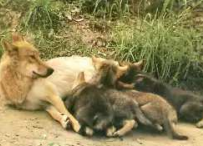
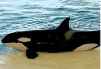
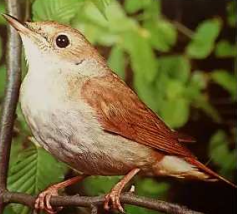
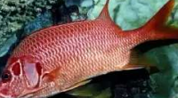
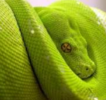
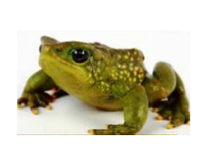

ANIMALES VERTEBRADOS
Los animales vertebrados tienen huesos y columna vertebral. El cuerpo de los vertebrados se divide en cabeza, tronco y
extremidades. Casi todos tienen cola.
CLASES DE VERTEBRADOS:
MAMIFEROS:
Son vivíparos, nacen del vientre de la madre y se alimentan de su leche. La alimentan de su leche. La madre produce leche en su madre produce leche en sus mamas. Casi todos viven en la tierra y respiran por pulmones. Su cuerpo está cubierto de pelo.

Hay mamíferos que viven en el agua y parecen peces, pero no lo son. Por ejemplo, las ballenas y los delfines: aunque sean
mamíferos no tienen pelo y no tienen patas porque se han transformado en aletas para nadar, pero nacen del vientre de la
madre y maman leche. También las focas.

AVES:
Son ovíparas, nacen de huevos. Tienen pico, dos patas, dos alas para volar y el cuerpo cubierto de plumas. Respiran
por pulmones.

PECES:
Son ovíparos, nacen de huevos. Tienen aletas para nadar y el cuerpo cubierto de escamas. Respiran por branquias, que están en la parte de detrás de la cabeza.

REPTILES:
Son ovíparos, nacen de huevos. Se mueven arrastrándo arrastrándose. Tienen el cuerpo cubierto de escamas. Algunos, como las tortugas, tienen caparazón. Respiran por pulmones.

ANFIBIOS:
Son ovíparos, nacen de huevos. Se mueven nadando, como las ranas, saltando, como las ranas o reptando. Respiran
por pulmones, y por la piel, que tiene que estar siempre húmeda.
